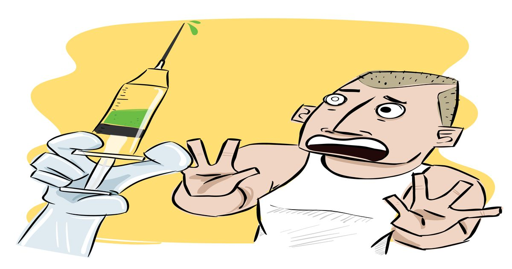

Боитесь уколов? Любимая мелодия помогает приглушить боль
Многие люди действительно ненавидят иглы.
Когда им приходится сдавать кровь или делать капельницу даже для небольшой медицинской процедуры, они могут паниковать, напрягая мышцы и увеличивая частоту сердечных сокращений, что может усилить боль от удара.
Некоторые люди даже испытывают постоянный шок от боли и беспокойства после того, как игла пришла и ушла.
Трипанофобия, как известно, это неприятное состояние, не является редким явлением.
Исследование 2021 года в области психологической медицины сообщило, что